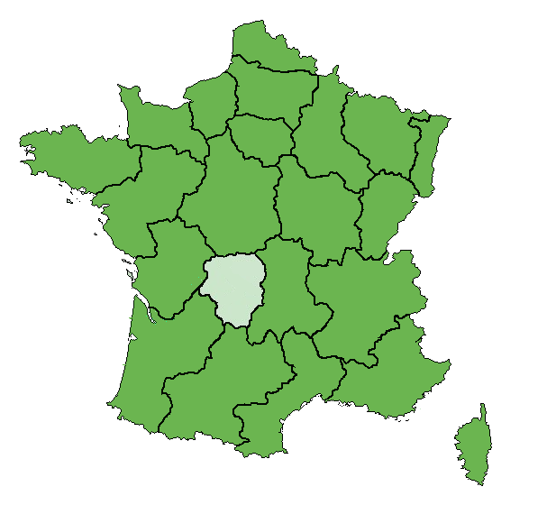

Mangeons mieux, mangeons bien, partageons nos ressources
Vege&Fruit est une association locale à but non lucratif. Notre interface web vous permet d'acheter des fruits et légumes cetifiés frais* par les collaborateurs de votre région. Notre spécificité
vous pourrez gratuitement mettre en vente sur notre site, vos récoltes sous forme de Panier Fraicheur et ce gratuitement.
Achetez directement chez vos revendeurs locaux pour cela selectionnez votre région
